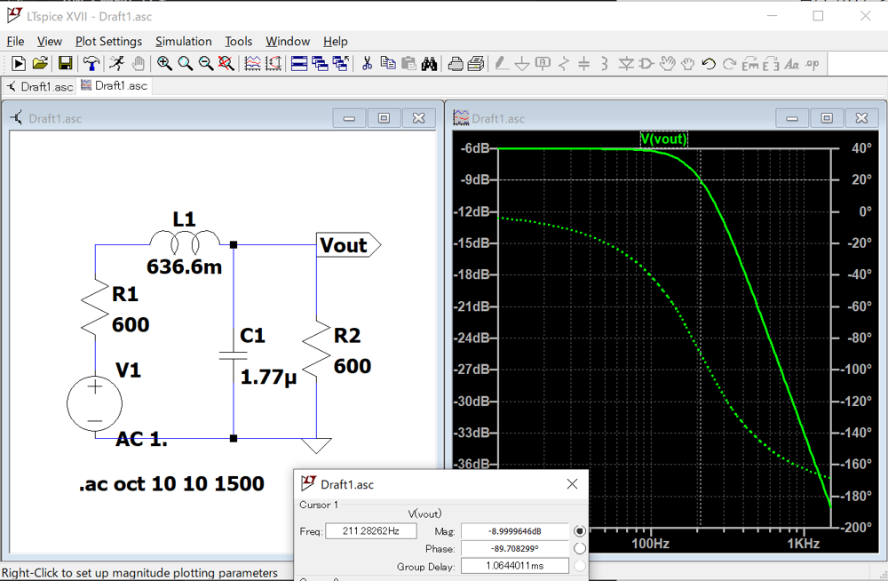

定K形フィルタの数値解析（レベル2）
Numerical Analysis of Constant-K Filters
目的 Objective
周波数フィルタリングに用いられる、定K形フィルタの周波数特性を理解する。
Understand the frequency characteristics of a constant-K filter used in frequency filtering.
理論 The basics
次の言葉を含むよう、各自調べてまとめること。箇条書きでなく、文章で記述すること。
Research and summarize a theory to include the following words.
- 定K形フィルタ constant‐K filter
- 周波数フィルタリング frequency filtering
- カットオフ周波数 cutoff frequency
- ローパスフィルタ low pass filter
- ハイパスフィルタ high pass filter
- ニュートン法 Newton-Raphson method
実験方法 Experiment method
LTspiceによるシミュレーション Simulation with LTspice
ローパスフィルタ Low-pass filter
LC直列回路に内部抵抗600Ω、1VのAC電源を接続し、LPFを設計せよ。
負荷として600Ωの抵抗を接続し、負荷にかかる出力電圧の周波数特性を求めよ。
また、カットオフ周波数をグラフから求めよ。
Design the Low-pass filter by connecting an LC series circuit to AC power supply of 1V with 600Ω of internal resistance.
Connect a 600Ω resistor as a load, and obtain the frequency response of the output voltage. Also, find the cutoff frequency from the graph.
各素子の値は以下のものを使用する。
The values for each element are as follows.
L=636.6mH
C=1.77uF
解析の例を下に示す。
An example of the analysis is shown below.

ハイパスフィルタ High-pass filter
LC直列回路に内部抵抗600Ω、1VのAC電源を接続し、HPFを設計せよ。
負荷として600Ωの抵抗を接続し、抵抗にかかる電圧の周波数特性を求めよ。
また、カットオフ周波数をグラフから求めよ。
Design the High-pass filter by connecting an LC series circuit to AC power supply of 1V with 600Ω of internal resistance.
Connect a 600Ω resistor as a load, and obtain the frequency response of the output voltage. Also, find the cutoff frequency from the graph.
各素子の値は以下のものを使用する。
The values for each element are as follows.
L=318.8mH
C=0.8842uF
解析の例を下に示す。
An example of the analysis is shown below.
プログラミングによる数値解析 Numerical analysis by programming
上で解析したローパスフィルタの出力は、以下の式で求められる。
The output voltage of the low-pass filter analyzed above can be obtained by the following equation.
同様に、ハイパスフィルタの出力は以下の式で求められる。
Similarly, the output of the high-pass filter is as follows.
ローパスフィルタとハイパスフィルタについて、上の式をもとに数値解析を行え。
また、それぞれのカットオフ周波数を数値計算の手法であるニュートン法で求めよ。
使用するプログラミング言語は問わない。
Analyze the low-pass and high-pass filters numerically based on the above equations.
Also, calculate each cutoff frequency using Newton-Raphson method.
Any programming language is acceptable.
参考としてPythonプログラムを提供する。
A Python program is provided for reference.
https://colab.research.google.com/drive/1zNCfxhPKgGnYvRVGvhQkUZki0-0sd16f?usp=sharing
検討課題 Discussion
(1) ローパスフィルタとハイパスフィルタの用途について、以下の観点から調べて説明せよ。
Explain the applications of low-pass and high-pass filters from the following points.
- アナログ信号の処理・解析 Analog signal processing and analysis
- ディジタル信号の処理・解析 Digital signal processing and analysis
(2) ローパスフィルタの出力について、回路方程式から理論式を導け。
Derive the theoretical equation for the output of the low-pass filter from the circuit equation.